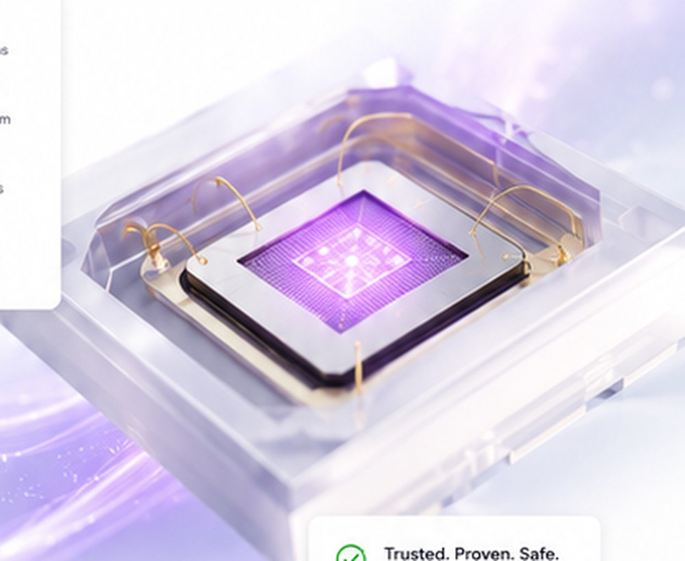
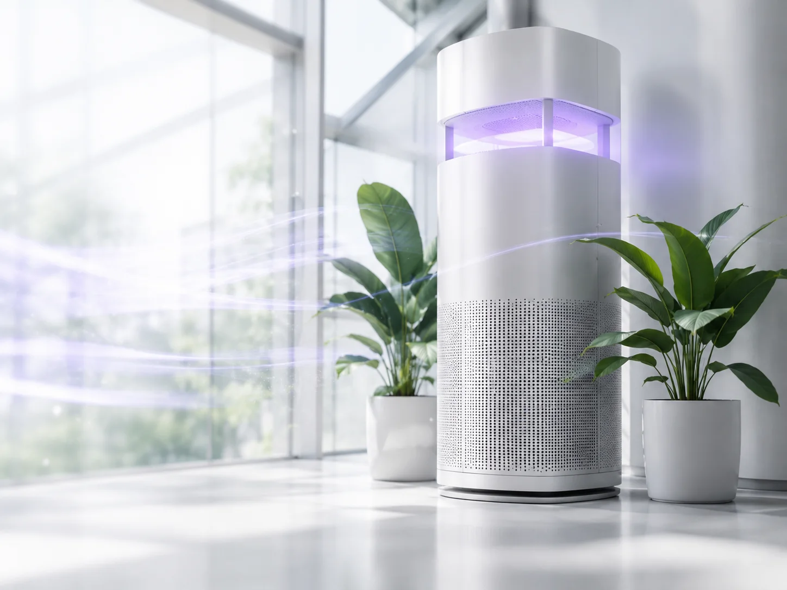
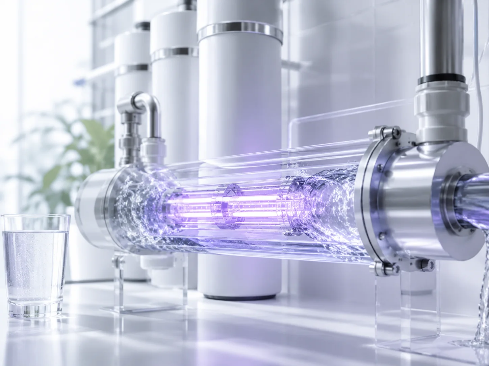
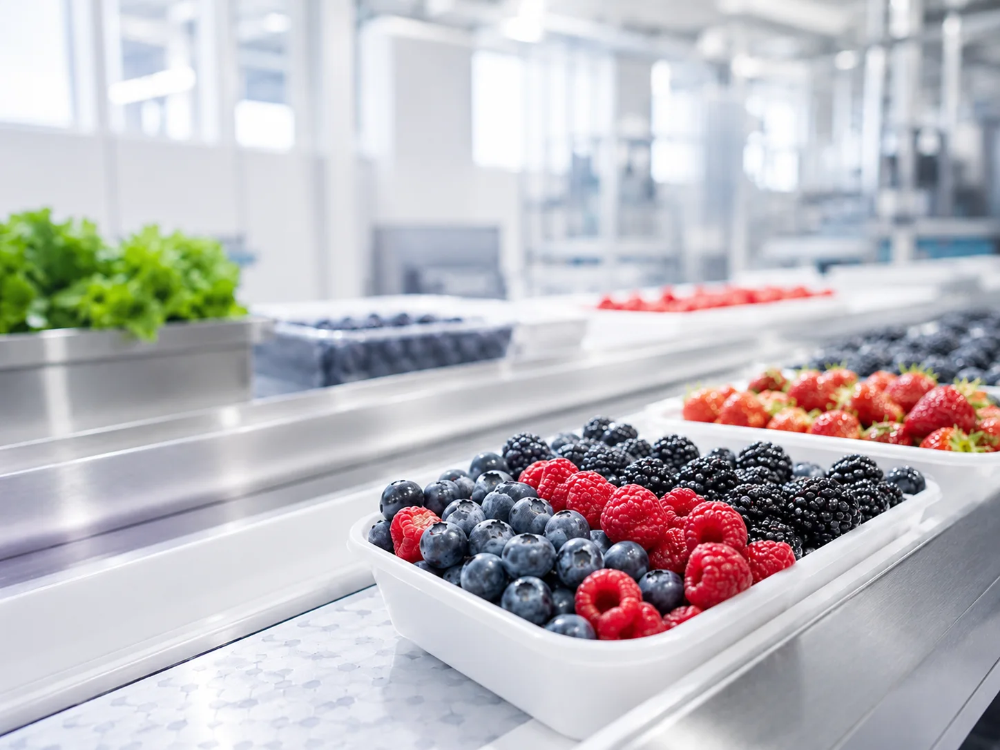
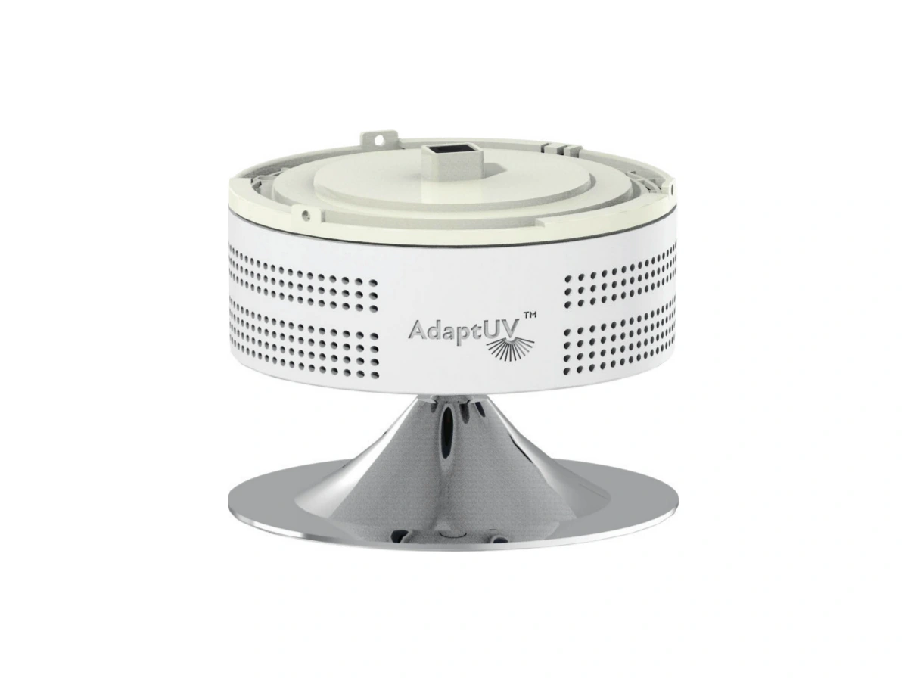
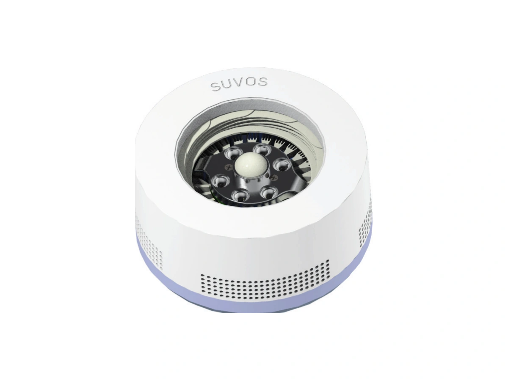
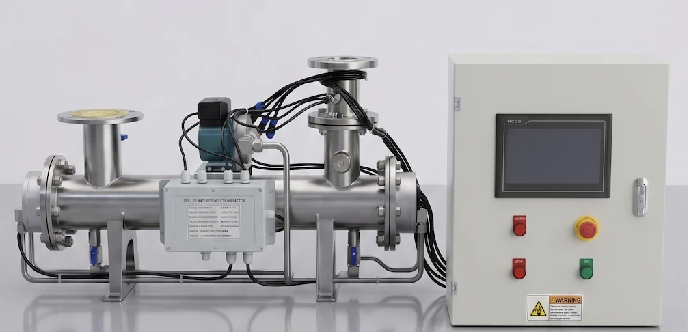
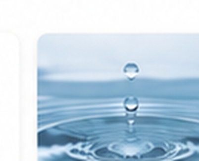

UV-C LEDs powering the next generation of disinfection.
Bolb supplies packaged UV-C emitters, scalable modules, custom arrays, and application engineering for OEM systems treating air, water, surfaces, and food-processing environments.

Start with the UV-C source.
Choose the emitter or module format that fits the optical output, electrical architecture, thermal path, mechanical envelope, and production scale of your system.

S3535 and S6060 emitters
Compact, high-output UV-C sources for OEM optical, electrical, and thermal integration.
Compare packaged LEDs →
Hex, 1×12, 5×5, and custom
Pre-arranged sources that scale optical power and reduce the effort required to build the light engine.
Explore modules & arrays →
Custom arrays & reference designs
Optical, driver, thermal, safety, and prototype support for teams moving from source selection to a verified system.
Explore engineering support →Component performance with system-level understanding.
Bolb’s role is to provide the UV-C light source and help OEM teams integrate it effectively—not to compete with the finished systems built by customers and partners.
Discuss an OEM project →Semiconductor expertise
III-nitride device design, packaging, wavelength selection, and high-power UV-C operation.
Integration support
Optical geometry, drivers, cooling, safety logic, test planning, and reference architecture.
Scalable formats
Single packaged emitters, standard modules, multi-emitter arrays, and custom layouts.
See how the source fits the system.
Each application page begins with the engineering challenge, recommends relevant Bolb components, and then shows finished customer systems as implementation examples.

Build around airflow and occupied-space safety.
Upper-room, in-duct, purifier, and targeted architectures using S3535 emitters and linear or custom modules.
Explore air integration →
Match output to flow, UVT, and reactor geometry.
Component selection and array integration for single-pass reactors, process loops, and high-flow treatment.
Explore water integration →Design for distance, coverage, shadowing, and access.
Compact local treatment and coordinated multi-zone architectures using packaged LEDs and scalable arrays.
Explore surface integration →
Integrate UV-C into processing and packaging.
Linear, distributed, and high-output source formats for water, conveyors, packaging, storage, and sanitation.
Explore food-safety integration →Customer systems demonstrate what the components enable.
The fixtures and complete systems below were developed by customers or partners using Bolb UV-C technology. They are application examples—not products sold as complete systems by Bolb.

Upper-room air fixture
Ceiling-mounted architecture using four S3535-H 265 nm LEDs.
Read the air story →
Targeted air & surface
Compact fixture combining UV-C output, presence sensing, and cycle control.
Read the application story →
Industrial inline reactor
A 10 T/H system example using UV-C LED arrays and real-time control.
Read the water story →
AI-coordinated zones
Multi-camera control concept for independently managed UV-C treatment zones.
Read the surface story →Complete-system performance, certifications, warranty, support, and commercial availability are the responsibility of the system manufacturer. Publication should be approved by the relevant customer or partner.
A UV-C semiconductor and module company.
Bolb develops high-performance UV-C emitters and modules and supports OEM teams as they translate light-source performance into safe, reliable, and manufacturable disinfection systems.
Talk with the Bolb team →Chip to package
Device physics, epitaxy, packaging, optical output, and thermal behavior.
Package to module
Electrical configuration, MCPCB formats, cooling interfaces, and scalable output.
Module to system
Application guidance, dose planning, safety, measurement, and validation support.
Technology, integration, and customer stories.

Choosing a packaged UV-C emitter
Compare wavelength, output, drive current, beam geometry, and thermal resistance.
Read the product guide →
Upper-room versus targeted treatment
How two customer architectures use Bolb components in different operating environments.
Read the air guide →
Designing the light engine for water
Flow, UV transmittance, optical path, mixing, thermal design, and monitoring.
Read the water guide →Share the application. Bolb will help select the source.
Include the target wavelength, optical output, treatment geometry, flow or line speed, cooling constraints, prototype stage, and expected annual volume.